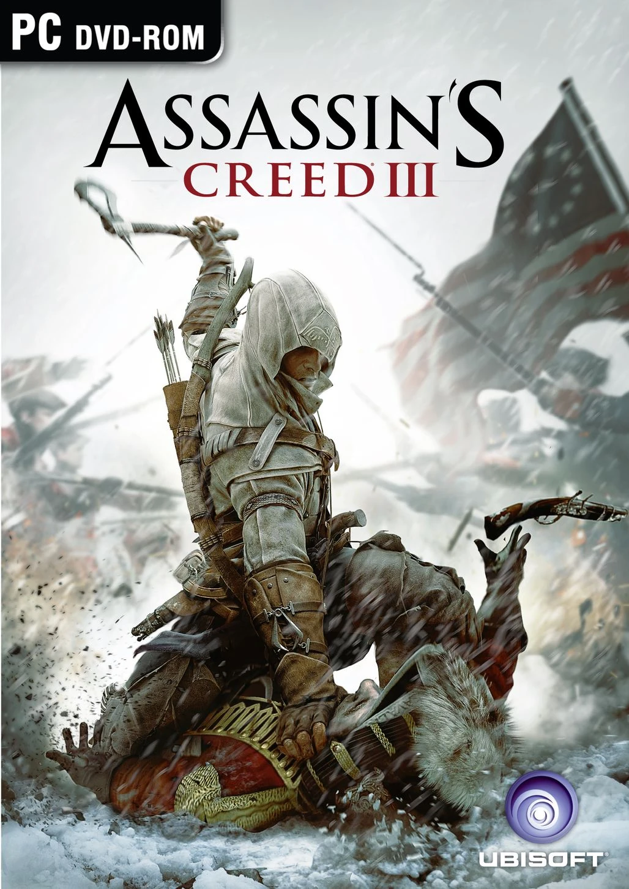

Assasin's creed III
Historia y Jugabilidad:
Assassin's Creed III es la quinta entrega principal de la aclamada saga Assassin's Creed.
A diferencia de los juegos anteriores que se centraban en épocas europeas, esta entrega
transporta a los jugadores a la Revolución Americana en el siglo XVIII. Introduce a un nuevo
protagonista, Connor Kenway (también conocido como Ratonhnhaké:ton), un nativo americano de
ascendencia mohawk y británica, que se ve inmerso en el conflicto entre los Asesinos y los Templarios
en el contexto de la lucha por la independencia de Estados Unidos.
Mecánicas
Assassin's Creed III mantiene los elementos distintivos de la serie, como el parkour para atravesar el entorno, el sigilo para eliminar objetivos y el combate cuerpo a cuerpo. Sin embargo, introduce varias innovaciones:
- Nuevos Mecánicas de Parkour: El movimiento a través de los árboles en la Frontera y la escalada de formaciones rocosas añaden una nueva dimensión al parkour.
- Sistema de Combate Mejorado: El combate se siente más fluido y visceral, con contraataques y eliminaciones contextuales. Connor utiliza una variedad de armas, incluyendo el tomahawk (hacha de guerra), cuchillos ocultos, arcos y pistolas.
- Caza y Comercio: La Frontera ofrece la posibilidad de cazar animales para obtener pieles y otros recursos que pueden venderse o usarse para fabricar objetos.